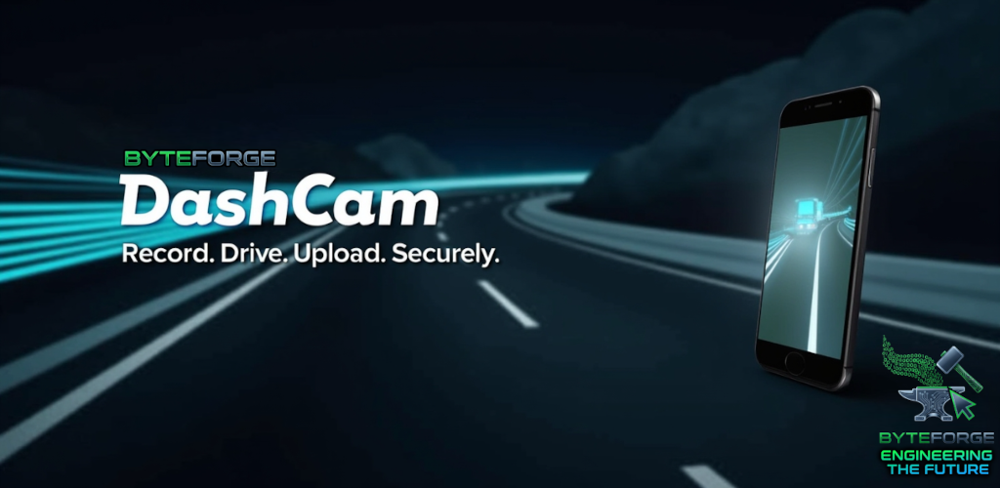

👋 Obrigado pelo seu interesse em testar o DashCam!
Estamos recrutando usuários Beta para testar a versão inicial do aplicativo DashCam by ByteForge, disponível para Android 8.0 ou superior.
O DashCam transforma seu celular em uma câmera veicular inteligente — grava automaticamente ao ligar o carro, detecta impactos e pode enviar vídeos para o Google Drive, OneDrive ou sua rede local.
Principais Recursos
- Gravação automática vinculada à ignição ou detecção de impacto
- Detecção de impacto com buffer circular de vídeo (salva 2 min antes + 10 seg depois)
- Telemetria abrangente: registro de GPS, velocidade e sensor de movimento de 6 eixos
- Uploads flexíveis: pasta compartilhada do Windows (SMB/CIFS) ou nuvem (Google Drive, OneDrive)
- Múltiplos formatos de saída: vídeo MP4, legendas SRT, dados de sensor CSV, trilhas GPX
- Gerenciamento automático de armazenamento: remoção automática configurável quando o armazenamento está baixo
- Uploads baseados em fila: tentativa automática com processamento em segundo plano
- Credenciais seguras: armazenamento criptografado via Android Keystore
- Suporte NetBIOS: use nomes de host do Windows ao invés de endereços IP
- Otimizado para bateria: projetado para operação contínua com consumo mínimo de energia
- Operação sem toque: instale uma vez, dirija diariamente — nenhuma interação necessária
📩 Para participar, envie um e-mail para support@byteforge.biz com o assunto: “Cadastro de Beta Tester – DashCam”
Inclua:
- Seu nome completo
- Modelo e versão do seu celular Android
- Experiência anterior (se tiver) com apps de gravação ou câmeras veiculares
Após o envio, entraremos em contato com as instruções de instalação.
Obrigado por ajudar a tornar o DashCam ainda melhor! 🚗💡
— Equipe ByteForge